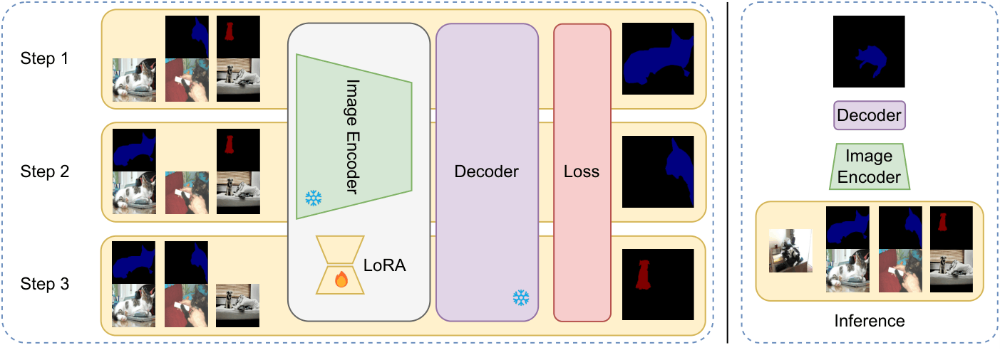
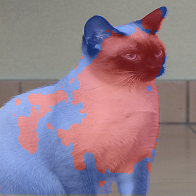
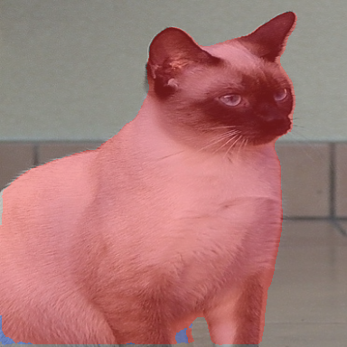

Few-shot semantic segmentation (FSS) aims to segment novel classes in query images using only a small annotated support set. While prior research has mainly focused on improving decoders, the encoder's limited ability to extract meaningful features for unseen classes remains a key bottleneck. In this work, we introduce Take a Peek (TaP), a simple yet effective method that enhances encoder adaptability for both FSS and cross-domain FSS by inducing a lightweight feature-space shift conditioned on the support set.
TaP leverages Low-Rank Adaptation (LoRA) to fine-tune the encoder on the support set with minimal computational overhead, enabling fast adaptation to novel classes while mitigating catastrophic forgetting. Our method is model-agnostic and can be seamlessly integrated into existing FSS pipelines. Extensive experiments across multiple benchmarks — including COCO 20i, Pascal 5i, and cross-domain datasets (DeepGlobe, ISIC, Chest X-ray) — demonstrate that TaP consistently improves segmentation performance across diverse models and shot settings.

Most FSS models freeze the encoder, adapting only the decoder. This leaves a critical gap: a pretrained encoder cannot discriminate novel classes it has never seen, regardless of how good the decoder is.
TaP fixes this at inference time. LoRA adapters fine-tune the encoder on the support set via the substitution strategy — each support image briefly acts as a pseudo-query, supervised by the others. The decoder is never touched; the encoder simply arrives better prepared.
No decoder modification — TaP plugs into any existing FSS model without retraining.
Only $A$ and $B$ in $W' = W + \alpha AB$ are trained. The base weights never change.
Known support images act as pseudo-queries, giving a free training signal without any extra labelled data.
Each of the N×K support images takes a turn as a pseudo-query. Its ground-truth mask supervises a forward–backward pass; only the LoRA adapters are updated, leaving the base encoder and decoder weights untouched.
As TaP adapts the encoder, pixel-level features from the query and support images progressively separate by class in the embedding space. The animation below shows the encoder output (last Swin-B scale, 1024 d, projected to 2D via t-SNE) and the corresponding segmentation prediction at each adaptation step.
Loading feature-shift data…
2-way 3-shot episode on COCO 20i — DCAMA with Swin-B backbone.

Vanilla (no TaP)
With TaPAll results are averaged over 5 runs × 1000 episodes. TaP is compared against the vanilla baseline (frozen encoder), Decoder FT, and AdaptiveFSS.
| Model | 1-way 5-shot | 2-way 5-shot |
|---|---|---|
| BAM | +7.14 | +8.33 |
| DCAMA | +1.74 | +5.44 |
| FPTrans | +0.66 | +3.96 |
| HDMNet | +1.66 | +3.97 |
| Label Anything | +3.32 | +5.00 |
| Dataset | 3-shot | 5-shot | 10-shot | 15-shot |
|---|---|---|---|---|
| DeepGlobe | +1.64 | +2.42 | +2.83 | +4.55 |
| ISIC | +3.26 | +2.26 | +4.01 | +4.97 |
| Chest X-ray | +13.76 | +15.95 | +18.28 | +20.65 |
@article{marinisTakePeekEfficient2025,
title = {Take a {Peek}: {Efficient} {Encoder} {Adaptation} for {Few}-{Shot} {Semantic} {Segmentation} via {LoRA}},
shorttitle = {Take a {Peek}},
url = {http://arxiv.org/abs/2512.10521},
doi = {10.48550/arXiv.2512.10521},
publisher = {arXiv},
author = {Marinis, Pasquale De and Vessio, Gennaro and Castellano, Giovanna},
month = dec,
year = {2025},
note = {arXiv:2512.10521 [cs]},
keywords = {Computer Science - Computer Vision and Pattern Recognition},
}